| 著名小吃 | ||
| 历史名人 | 地理风貌 | 关于 |
芜湖山水相应，自古有半城山半城水之称。
|
芜湖滨江夜景 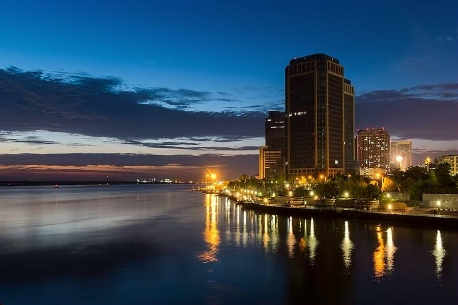 芜湖城市夜景 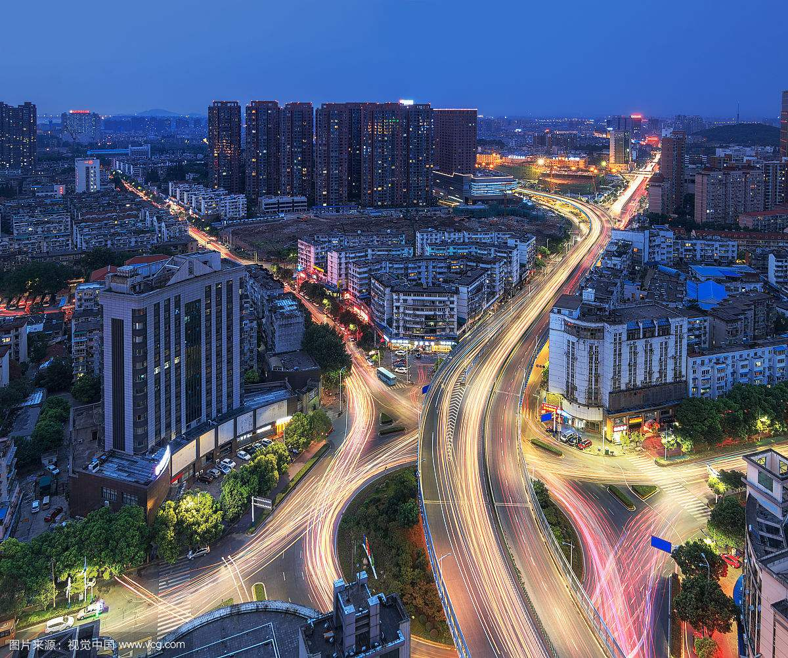 芜湖长江俯瞰 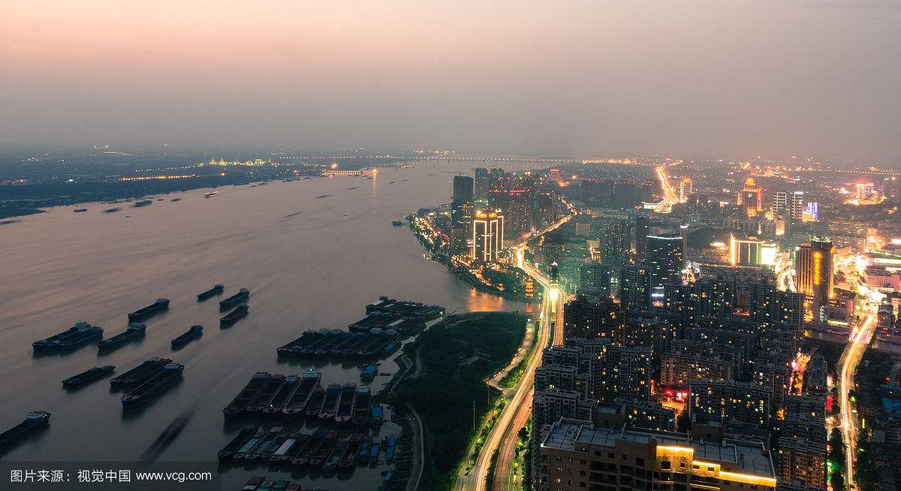 |
| 芜湖市的代表景点有芜湖十景，分别是赭塔晴岚、镜湖细柳、赤铸青锋、玩鞭春色、双江塔影 、天门烟浪、西山灵石、马仁云壁、陶辛水韵、褐山揽胜。 |
赭塔晴岚 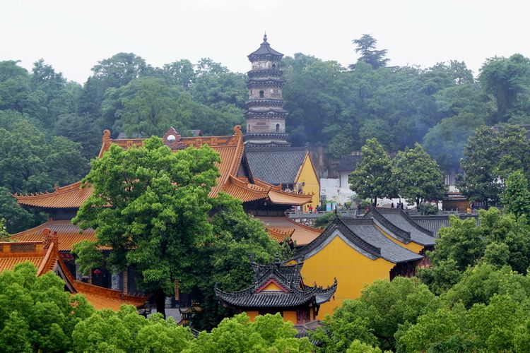 |
镜湖细柳 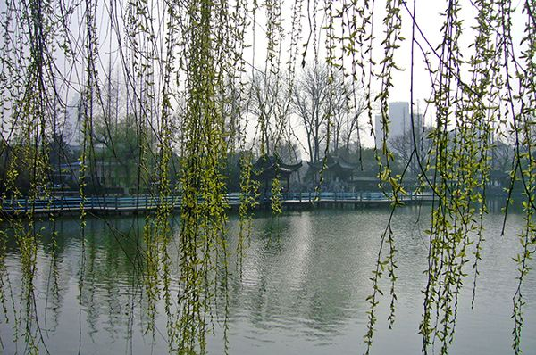 |
赤铸青锋 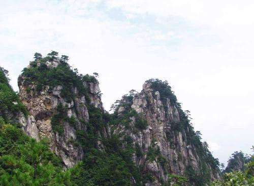 |
玩鞭春色 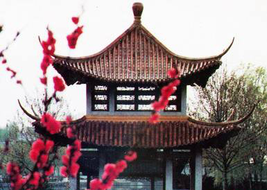 |
双江塔影 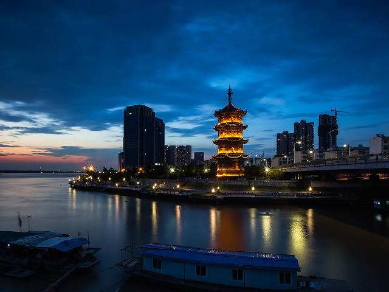 |
天门烟浪 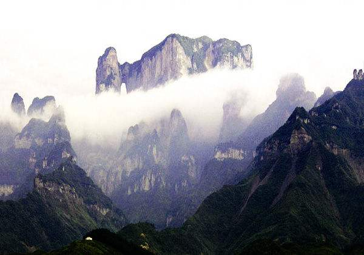 |
西山灵石 |
马仁云壁 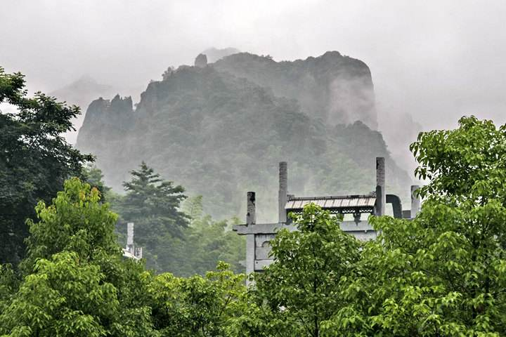 |
陶辛水韵 |
褐山揽胜 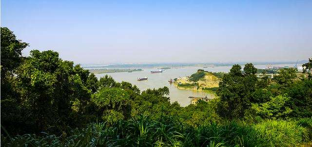 |
除了著名的芜湖十景之外，芜湖在全国闻名的5A级旅游度假区——方特欢乐世界也在我国独领风骚。目前中国一共有六个方特欢乐世界，安徽芜湖的方特欢乐世界是全国最大的一个也是方特欢乐世界中唯一一个AAAAA级景区。 |
火流星 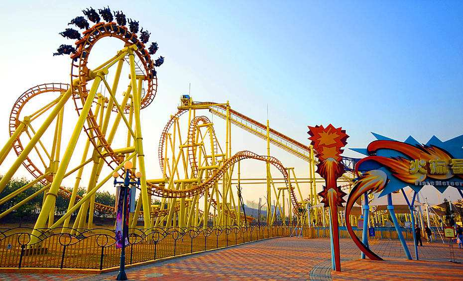 |
海洋馆 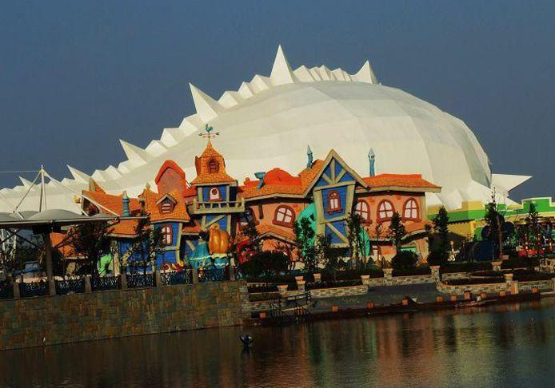 |
方特全景 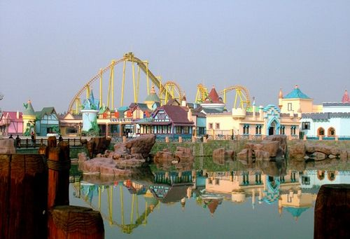 |
方特跨年夜 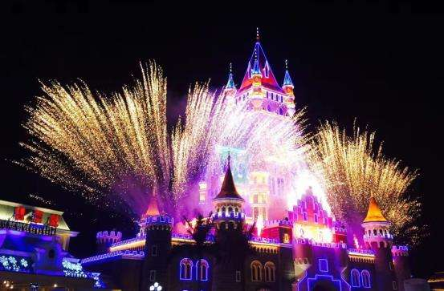 |
方特夜景 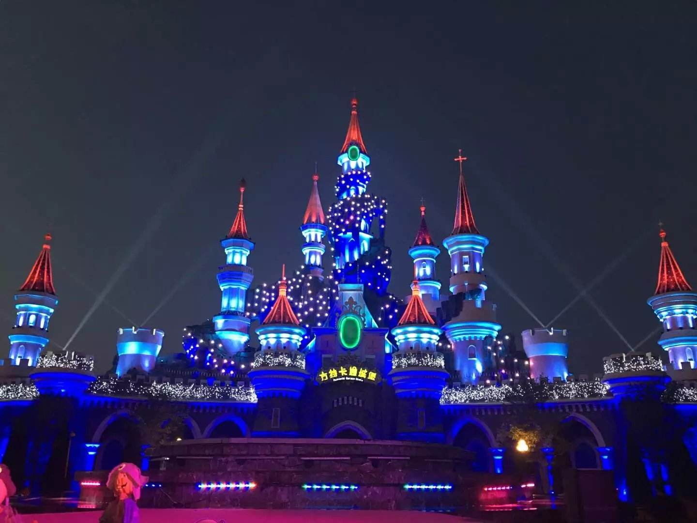 |
方特夜景 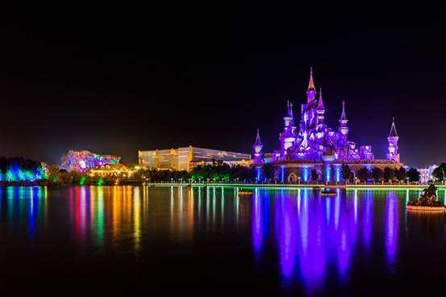 |
我相信，在芜湖经济实力不断发展的背景下，芜湖方特欢乐世界一定会在来年创造出新的辉煌， |
| 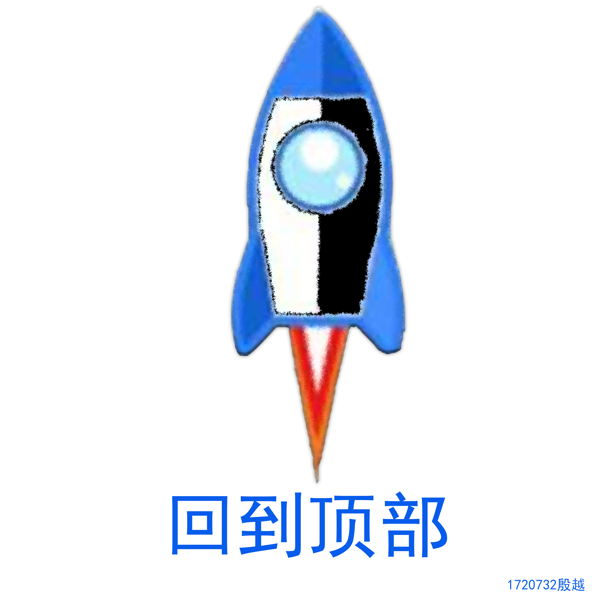 |
Osill Corporation©2018 联系我们